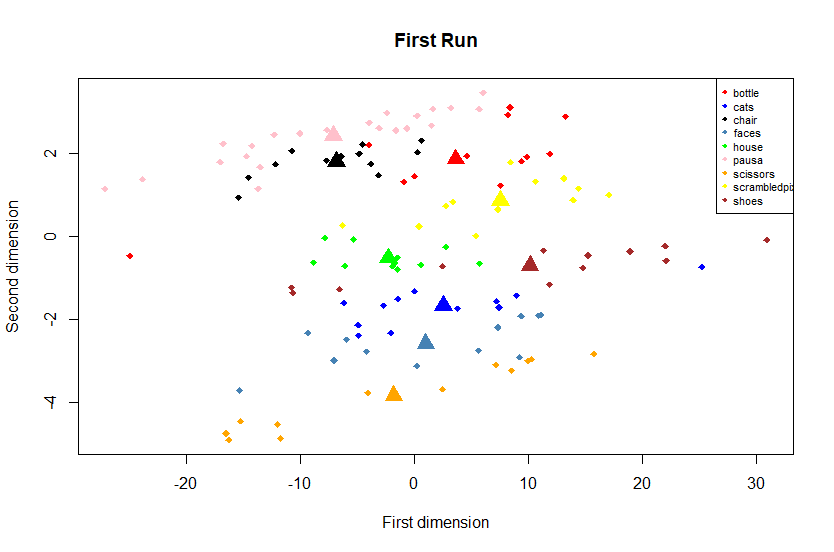
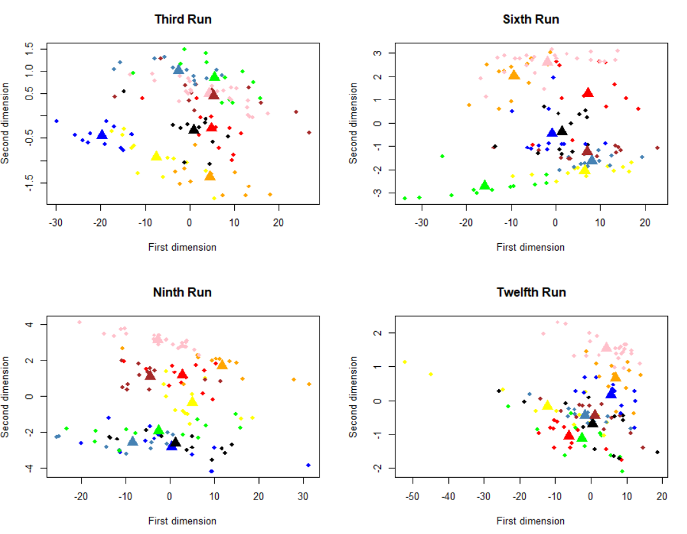
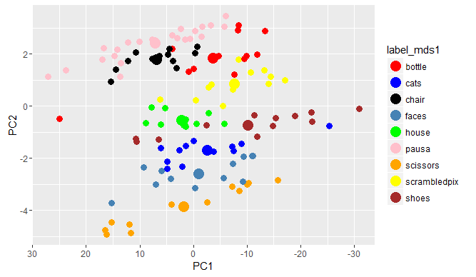
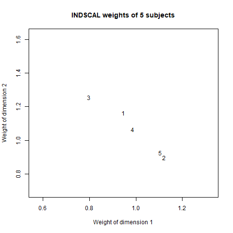
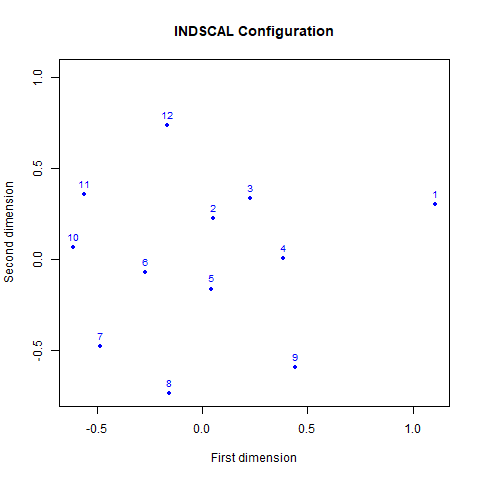

Introduction
In this tutorial, the aim is to show a simple application of multidimensional scaling techniques having fMRI data. You can download the entire dataset from the OpenfMRI website that provides free access to neuroimaging datasets. However, in this short tutorial, we will analyze the fMRI data of 5 subjects. Each subject has 12 runs, and each run is composed of 121 scans. During each scan, the individual is subjected to a 24-seconds stimuli followed by a 12-seconds pause. The stimulus consists of the visualization of certain objects, people, or animals images. In particular, 8 different categories of grey-scale images of houses, cats, bottles, nonsense patterns, chairs, scissors, shoes, and faces were used. For more details, please see the OpenfMRI website.
The aim is to represent the brain activities described by voxels in two dimensions, discovering some clusters that correspond to the brain activities due to the different stimuli. Therefore, the multidimensional scaling techniques is applied.
Data
You can download directly the data described previously from this link. You will find 5 .Rdata files, one for each subject analyzed. Each .Rdata file is a list of 12 numeric elements, one for each run. Each element is a matrix with dimension \((40 \times 64 \times 64) \times 121\), where the rows represent the number of voxels and the columns the number of scans. For more details about the data preprocessing, please send me an email (angelaDOTandreellaATstatDOTunipdDOTit).
So, first of all, you must download the libraries and the .rData files:
library(ggplot2)#plot
library(vegan)#matrix dissimilarities
library(smacof)#SMACOF for Individual Differences
library(stats) #multidimensional scaling
load("your_path/dati_fmri_sub1.rData") #considering the first subject as exampleand save the first run discarding the last settling volume considered as noise, and the corresponding labels stimuli:
sub1_run1_XX1 <-crossprod(sub1_run_X[[1]])[-121,-121]
label_mds1 <- c(rep("scissors",12),rep("faces",12),rep("cats",12), rep("shoes",12), rep("house",12),rep("scrambledpix",12),rep("bottle",12) , rep("chair",12),rep("pausa",12),rep("pausa",12))the object sub1_run1_XX1 is our \(X\) matrix. Then, we are ready to apply the multidimensional scaling technique.
Multidimensional Scaling
The \(X^\top X\) matrix, with dimension \(120 \times 120\) was constructed after centering the matrix \(X\). The matrix of Euclidean distances was calculated and classical multidimensional scaling was applied, thanks to the vegan package:
sub1_run1_dist_eu <-vegdist(decostand(sub1_run1_XX1,method = "standardize"),method = "euclidean") #euclidean distance
mds <- cmdscale(sub1_run1_dist_eu) #multidimensional scaling
mds1<-as.data.frame(cbind(mds,label_mds1))
mds1$V1<-as.numeric(as.character(mds1$V1)); mds1$V2<-as.numeric(as.character(mds1$V2))
centroids <- aggregate(cbind(V1,V2)~label_mds1,mds1,mean) #compute centroidsand then, we plot the eulidean distances and the corresponding centroids computed:
cols = c('red', 'blue', 'black', 'steelblue', 'green', 'pink','orange','yellow','brown')
plot(mds1[,1],mds1[,2], type = 'n',xlab="First dimension",ylab="Second dimension",main = "First Run")
points(mds1[,1],mds1[,2], col = cols[as.factor(mds1[,3])], pch = 18)
points(centroids[,2:3], col = cols[as.factor(centroids[,1])], pch = 17,cex=2)
legend('topright', col=cols, legend=levels(as.factor(mds1[,3])),pch=18, cex = 0.7)
We can see that the multidimensional scaling technique permits to represent this heavy matrix into two-dimensional space, also, we can see that are some clusters. All brain activities given by a particular category of stimulus are represented in the same cluster. Then, the y-axis can describe the stimulus categories and the x-axis the various scans applied. It is a very useful plot that summarizes our multidimensional data. We can note, also, that the brain activities given by animate objects, as faces and cats, are closer together compared to inanimate objects, like bottles, scissors and so, but to test this aspect we need more computation that is outside of this simple tutorial. Another important aspect is how the representation of brain activity changes across runs. Therefore, we have applied the procedure just explained considering the runs 3, 6, 9 and 12 of the first subject:

We can note something a little bit strange, across the time the division of cluster gets worse, probably due to loss of subject attention.
We must note, also, that this method of multidimensional scaling applied provides the same results coming from the principal component analysis. Below, the code used to do the principal component analysis:
pca <-prcomp(sub1_run1_XX1,center = TRUE,scale. = TRUE)
PC_fmri<-data.frame(pca$x,label_mds1=label_mds1)
centroids_PCA <- aggregate(cbind(PC1,PC2)~label_mds1,PC_fmri,mean)
ggplot(PC_fmri,aes(x=PC1,y=PC2,color=label_mds1)) +
geom_point(size=3)+ geom_point(data=centroids_PCA,size=5) + scale_shape_manual(values=c(3,23)) +
scale_x_reverse() + scale_colour_manual(values = cols)
Finally, we want to see if, having reduced the dimensionality of our data, the method of multidimensional scaling preserves the original distances. In the following plot, we represent the original distances versus the distances obtained from the multidimensional scaling method:
distOR<-dist(sub1_run1_dist_eu)
distMDS <- dist(mds[,1:2])
dist_plot<-as.data.frame(cbind(distMDS,distOR))
ggplot(dist_plot,aes(x=distOR,y=distMDS))+
geom_point(size=3) + geom_smooth(method = "lm", se = FALSE)+
labs(title = "Original distance vs mds configuration distance") +
xlab("Original distance") + ylab("Mds distance")
Individual Differences Scaling (INDSCAL)
In this second part, the data of all 5 individuals across 12 runs are analyzed. Individual proximity matrices are aggregated into a single analysis thanks to the INDSCAL algorithm developed on the SMACOF (Scaling by MAjorizing a COmplicated Function) package.
At first, we created the 12 matrices $ X^TX $, one for each run, considering the first subject:
sub1_covariance <- list()
sub_1_dist <-list()
for (i in 1:nrun){
sub1_covariance[[i]] <- crossprod(sub1_run_X[[i]])
}Then, we calculate the matrix Riemann distance between these 12 covariances:
distR_1 <- outer(seq_along(sub1_covariance), seq_along(sub1_covariance),
FUN= Vectorize(function(i,j) distcov(sub1_covariance[[i]], sub1_covariance[[j]],method = "Riemannian")))We redo these steps for all subjects, so, we will have 5 objects saved into the distr_all list:
Finally, we applied metric multidimensional scaling INDSCAL to these 5 matrices of dissimilarity:
ind_fmri <- smacofIndDiff(dist_all, type = "mspline",spline.intKnots = 50,itmax = 1000,spline.degree = 5,ndim = 2)and plot the individual differences:
sub1_w <- as.data.frame(ind_fmri$cweights[[1]])
sub2_w <- as.data.frame(ind_fmri$cweights[[2]])
sub3_w <- as.data.frame(ind_fmri$cweights[[3]])
sub4_w <- as.data.frame(ind_fmri$cweights[[4]])
sub5_w <- as.data.frame(ind_fmri$cweights[[5]])
plot(sub1_w[1,1],sub1_w[2,2],xlab="Weight of dimension 1",ylab="Weight of dimension 2",type = "n",main="INDSCAL weights of 5 subjects")
text(sub1_w[1,1],sub1_w[2,2],labels = "1",cex = 1)
text(sub2_w[1,1],sub2_w[2,2],labels = "2",cex = 1)
text(sub3_w[1,1],sub3_w[2,2],labels = "3",cex = 1)
text(sub4_w[1,1],sub4_w[2,2],labels = "4",cex = 1)
text(sub5_w[1,1],sub5_w[2,2],labels = "5",cex = 1)
This plot represents the similarities between brain activities of different individuals, a similarity space across 5 subjects. So, the individual 2 reacted similarly to the individual 5 but he/she is different from the individual 3. Then, homogeneities between subjects and/or any outliers could be noted.
Therefore, this plot represents the weights of each subject into the common space plot. So, the subject 3 has a greater weight into the second dimension than the first dimension, instead, the reverse situation is found considering the subjects 2 and 5.
Thanks to the following code:
plot(ind_fmri$gspace[, 1], ind_fmri$gspace[, 2],type = "p",cex=1,pch=20,col="blue",ylim = c(min(ind_fmri$gspace[, 2]),max(ind_fmri$gspace[, 2])*1.4),main = "INDSCAL Configuration",xlab = "First dimension",ylab = "Second dimension")
text(ind_fmri$gspace[, 1], ind_fmri$gspace[, 2],pos=3,labels = c(1:12),col="blue",cex=0.85)we can analyze the (dis)similarity calculated for each run across all individuals. We can see that the brain activities detected during the first run are far from the brain activities of the other runs:
